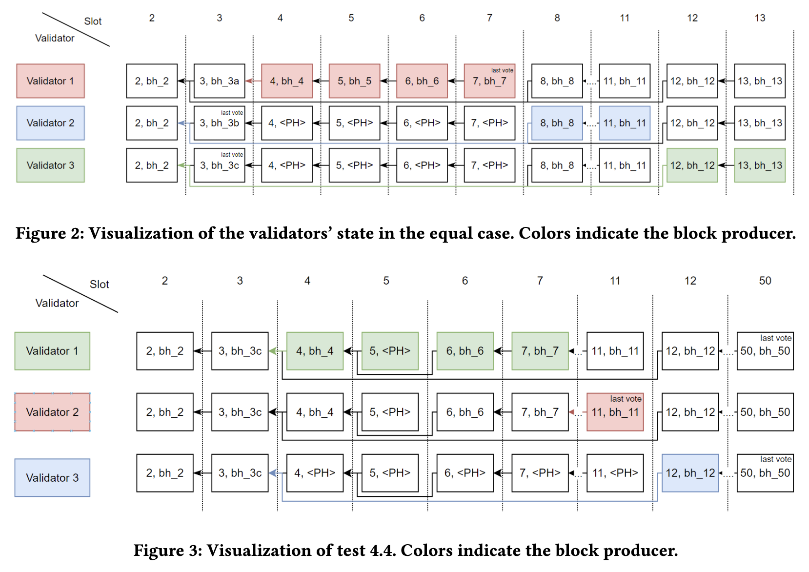

Quentin Kniep, Fabian Schaich, Jakub Sliwinski, Roger Wattenhofer
ICDCN 2024
Solana is a blockchain protocol that has gained significant attention in the cryptocurrency community. This work examines Solana's consensus protocol and its reference implementation. In this paper we try to get an understanding of the Solana protocol. However, this is not so easy because the publicly available resources are insufficient to specify the details of the protocol. Moreover, the implementation has deviated in undocumented ways from the available protocol design description. Thus the consensus rules and their implied security properties remain unclear. We evaluate a number of experimental scenarios in a local Solana testnet. These tests seem to confirm our basic understanding that Solana does not fully achieve consensus. In this paper we show how a single malicious validator, once elected as leader, might be able to halt the Solana blockchain. We also observe some inconsistent behavior, which is not readily explained by any of the consensus rules we are aware of.

@inproceedings{sliwinski2024HaltingThe,
author = {Quentin Kniep and Fabian Schaich and Jakub Sliwinski and Roger Wattenhofer},
title = {Halting the Solana Blockchain with Epsilon Stake},
booktitle = {DISC 2024},
year = {2024}
}